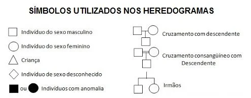
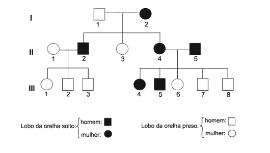
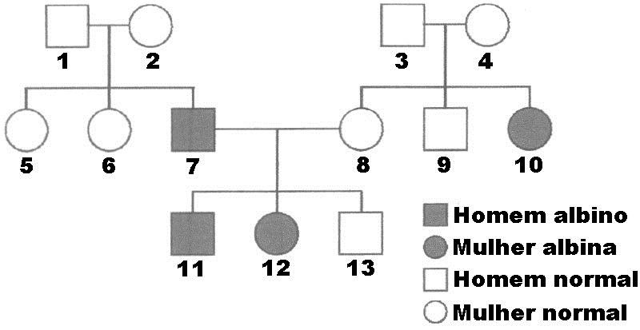
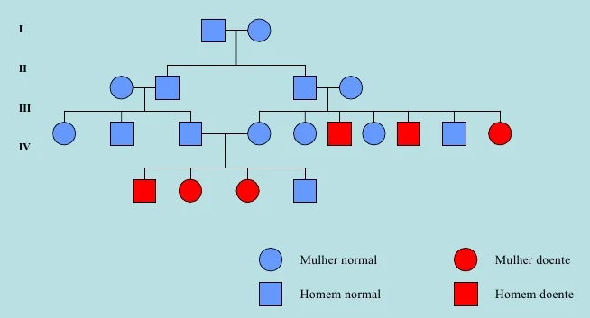
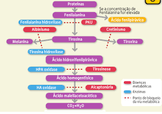
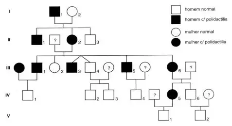
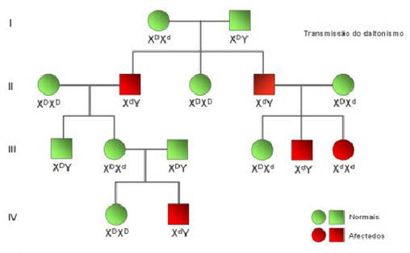
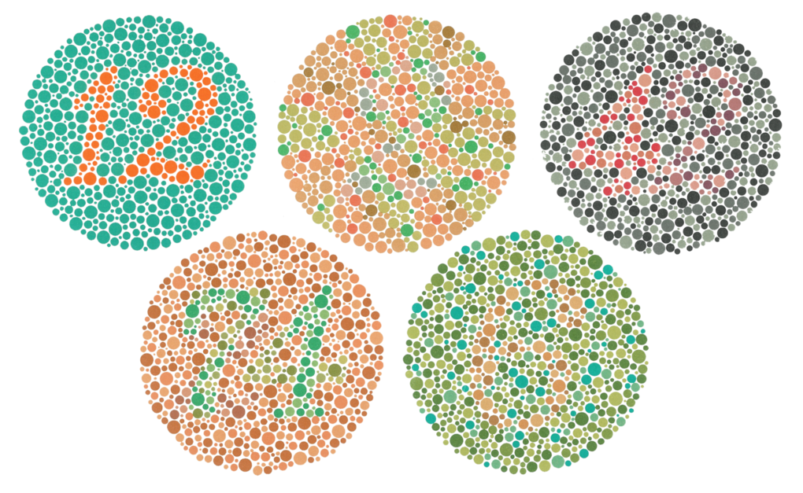
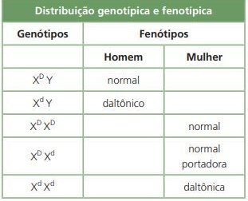

Para se estudar a linha de transmissão de algumas destas características são utilizadas e elaboradas árvores genealógicas ou, neste caso, heredogramas uma vez que neles não se encontram apenas as relações familiares, mas também os estudos já referidos. O estudo da transmissão de anomalias é feito desta forma, por exemplo.
 Através da análise destes esquemas não é apenas possível ficar a saber-se quais dos genes são dominantes e quais são os recessivos, mas também se estes se encontram nos cromossomas sexuais ou nos autossomas.
Albinismo:
O albinismo é uma doença bastante rara de carácter hereditário que resulta da incapacidade da produção de um pigmento denominado melanina. Esta doença surge devido à presença de um alelo mutante incapaz de codificar a enzima necessária para a produção do pigmento referido anteriormente.
Como se pode verificar pela análise da árvore genealógica acima, progenitores fenotipicamente normais podem gerar descentes que apresentem albinismo, isto porque esta é uma característica autossómica recessiva, ou seja, o gene que a determina encontra-se num autossoma e o alelo mutante é recessivo relativamente ao normal.
Fenilcetonúria:
A fenilcetonúria, ou PKU, é uma anomalia resultante da presença de um gene mutante responsável pela produção da enzima fenilalanina hidroxilase, que transforma esta em tirosina. Na ausência desta enzima, a fenilalanina acumula-se, dando origem ao ácido fenilpirúvico que afeta o desenvolvimento do sistema nervoso central levando, desse modo, ao aparecimento de atrasos mentais e problemas psicomotores.
A deteção precoce desta doença permite alterar as suas sequências. Quando esta se deteta em recém-nascidos, estes passam a adotar uma dieta alimentar na qual não consta o aminoácido fenilalanina, para garantir o normal desenvolvimento cerebral. Além da fenilcetonúria, existem outras doenças genéticas associadas a vias metabólicas que envolvem a fenilalanina.
Surdez:
Tal como várias outras doenças causadas por alelos autossómicos recessivos, também a surdez apresenta um carácter hereditário, apesar de a esta anomalia estar associada um fenómeno designado por heterogeneidade genética. Este fenómeno é resultante do facto de que vários genes são capazes de produzir o mesmo fenótipo (neste caso uma anomalia), desviando-se assim dos princípios criados por Mendel. Na verdade, existem atualmente cerca de 132 formas de surdez de carácter autossómico recessivo.
Critérios que permitem, geralmente, identificar casos de transmissão de um alelo autossómico recessivo:
Polidactilia:
Ao contrário das anomalias faladas anteriormente, outras anomalias de carácter hereditário resultam da expressão de genes dominantes, tal como acontece no caso da polidactilia. Esta anomalia é caracterizada pelo aparecimento de mais do que os "normais" 5 dedos nas mãos e/ou nos pés.
Critérios que permitem, geralmente, identificar casos de transmissão de um alelo autossómico dominante:
Hemofilia:
Tal como acontecia na espécie Drosophila, na espécie humana as fêmeas possuem dois cromossomas sexuais X (verdadeiros homólogos), enquanto que os machos apresentam um cromossoma X e um Y (falsos homólogos). Assim, se ocorrerem genes responsáveis por anomalias nos cromossomas sexuais, eles podem manifestar-se com frequências diferentes nos dois sexos.
A hemofilia resulta da presença de um gene mutante responsável pela síntese de uma proteína necessária para que ocorra a coagulação do sangue. A ausência desta proteína leva a que mesmo a mais pequena hemorragia leve horas a parar, podendo, em alguns casos, levar à morte. Atualmente existem mais do que um tipo de hemofilia contudo, as duas formas mais frequentes resultam de genes recessivos presentes em cromossomas X.
À semelhança daquilo que acontece com outras anomalias resultantes da expressão de genes presentes no cromossoma X, esta doença afeta maioritariamente os homens. De facto, uma mulher apenas terá esta doença caso possua o gene mutante em homozigotia tendo para isso que herdar um desses genes de cada um dos seus progenitores. Apesar disso, admite-se que quando tal acontece, esse facto leva à morte dos embriões, o que torna os casos de mulheres hemofílicas muito raros.
Esta é uma das anomalias hereditárias mais conhecidas devido ao facto de esta ter afetado algumas linhagens de famílias reais europeias.
O facto de terem ocorrido vários cruzamentos consanguíneos entre as famílias reais foi um fator importante para a manutenção e manifestação desta doença, tal como acontece com muitas outras anomalias.
Daltonismo:
O daltonismo constitui outro exemplo de uma anomalia hereditária resultante de um alelo mutante presente no cromossoma X. Os indivíduos que apresentam esta doença não conseguem distinguir certas cores, por exemplo, não conseguem distinguir o verde do vermelho.
Esta anomalia resulta da expressão de genes recessivos, ou seja, tal como acontecia nos casos de hemofilia, nos indivíduos do sexo feminino a doença apenas ocorre quando ambos os cromossomas X apresentam o alelo mutante responsável pelo daltonismo. Os indivíduos do sexo masculino para apresentarem a doença apenas precisam de possuir o alelo mutante, uma vez que o cromossoma Y não possui genes equivalentes.
No teste acima, chamado teste de Ishihara, encontram-se números dentro de cada um dos círculos com cores distintas das do mesmo. Na maioria dos casos de daltonismo nenhum dos números consegue ser identificado e esta foi uma das primeiras formas de se detetar esta doença.
No quadro acima é possível observar os diferentes genótipos e fenótipos possíveis para indivíduos de cada um dos sexos, relativamente ao daltonismo.
Critérios que permitem, geralmente, identificar casos de transmissão de um alelo recessivo ligado ao cromossoma X: